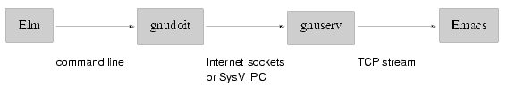

![[ TABLE OF CONTENTS ]](../gx/indexnew.gif)
![[ FRONT PAGE ]](../gx/homenew.gif)


This column is devoted to making the best use of Emacs, text editor extraordinaire. Each issue I plan to present an Emacs extension which can improve your productivity, make the sun shine more brightly and the grass greener.
Many people meet Emacs as the default program launched by Elm to edit an email message. Starting up Emacs in this way is a bit of a pain, because of the delay and memory use, but also because the fresh Emacs doesn't share buffers and a kill ring (storage for cut/copied text) with other invocations. Rather than starting up a new Emacs for each letter, you can set the environment variable EDITOR to emacsclient.
The Emacs server mechanism allows one Emacs process to service editing requests from other applications. To enable it you need to add a line like (server-start) in ~/.emacs. When you say emacsclient filename, the program searches for an Emacs process (launching one if necessary) and sends it a message asking it to edit filename. The caller process (the shell for example) is blocked while the file is being edited. When you're finished type C-x # and the client will be unblocked.
Gnuserv is a more sophisticated remote invocation mechanism for Emacs, written by Andy Norman (also the author of ange-ftp). It allows arbitrary Emacs Lisp commands to be sent to an Emacs process running either on the local machine or on another machine on the network.
(setq load-path (cons (expand-file-name "~/elisp") load-path))
(autoload 'gnuserv-start "gnuserv" "Better Emacs server support")
(setq gnuserv-frame (current-frame))
(gnuserv-start)
The second line tells Emacs that the function gnuserv-start is defined in a file called gnuserv.el, which Emacs will load on demand. The third line inhibits the default behaviour of opeing a new frame for each new file edited (leave this out if you prefer). The last line fires up the server.
To check that everything is working, type
~$ gnuclient <filename>
which asks Emacs to open <filename>, just like emacsclient. If this doesn't work (with a message like ``Refused connection'' or ``Broken pipe''), skip down to the Security section. You can also send off an arbitrary bit of Emacs Lisp :
~$ gnudoit '(message "Hi there, %s!" (user-full-name))'
Now you can do all sorts of silly things. You could get two Emacsen on networked machines to play ping pong, echoing messages back and forth. You could use Emacs as a CGI script server, profiting from its powerful library without incurring the overhead of launching an interpreter for each script (a little like the FastCGI mechanism). For example, let's hack together an external interface to Emacs' builtin psychologist :
(defun eliza-start ()
"Fire up the doctor."
(interactive)
(doctor)
;; We only have to type return once under this interface.
(re-search-backward " twice" nil t)
(replace-match "")
(goto-char (point-max))
(buffer-substring (point-min) (point-max)))
(defun eliza-continue (str)
"Send a string to the doctor and return her response."
(interactive)
(switch-to-buffer "*doctor*")
(insert "\n" str "\n")
(doctor-read-print)
(save-excursion
(re-search-backward "\n\n\\(\\(.+\n?\\)+\\)\n\n")
(match-string 1)))
(defun eliza-cleanup ()
"Pay the bill and leave."
(interactive)
(let ((buf (get-buffer "*doctor*")))
(if buf (kill-buffer buf))))
This can be used from the command line (for CGI use you'd have to think about the trickier question of concurrent accesses) with a script such as
#! /bin/sh
gnudoit '(eliza-start)'
while read line
do
gnudoit "(eliza-continue \"$line\")"
done
gnudoit '(eliza-cleanup)'
You might even find constructive uses for the gnuserv technology, like starting Gnus (an Emacs news/email client) and ange-ftp transfers from a ``network Emacs'', so that your primary Emacs isn't affected by networking delays. You could also communicate with Emacs from a crontab, telling it to fetch some web pages with Emacs/w3, or send someone an email. You could use Netscape's third party email/news API to invoke Emacs instead of the builtin mail and news clients. It might also be useful for sending commands to Emacs from a window manager menu.
More and more Linux distributions use good X security as set up out of the box. You will notice for example that when you su to root on a modern system, you will no longer be able to launch X clients, because the X server is protected by an xauth cookie.
While allowing access to your X display is bad enough (someone could capture all your keystrokes, for example), giving remote access to your Emacs process is much more worrying, since Emacs can execute arbitrary commands under your id, delete files, send insulting email to the President of the United States, etc.
Since release 2.1, gnuserv is able to use MIT-MAGIC-COOKIE-1 authentication for remote requests. This protocol uses the contents of your ~/.Xauthority file, as described in the xauth(1) man page. Gnuserv requires a cookie for display number 999, which you can create as follows (blade is the name of the machine) :
~$ xauth add blade:999 . `cat /etc/passwd | md5sum`
~$ xauth list
blade/unix:0 MIT-MAGIC-COOKIE-1 bc1d627babdbabe9d1f288d2b57c348f
blade:999 MIT-MAGIC-COOKIE-1 d89570b20925d401c05a79be67159cae
(`cat /etc/passwd | md5sum` is just a convenient way of generating a cookie; on most Linux systems you will be able to use the mcookie command, or you can bake a cookie by hand). Now you should be able to use gnuclient/gnudoit on the local machine. The next step is to transfer the cookie to each remote machine from which you plan to access Emacs, with a command such as :
~$ xauth extract - blade:999 | rsh remotehost.edu xauth merge -
If you don't run X you will have to fall back to a host-based access control system : the environment variable GNU_SECURE is assumed to point to a file which contains a list of machines which are authorized to open connections to your Emacs process. Finally, if your machine isn't networked, you've probably already skipped to the next section.
Your command takes a fairly convoluted route to reach Emacs. There are four parties involved in a transaction : the ``client'', or program which wants a service from Emacs (Elm for example), the gnuclient program (which runs on the requesting machine), the gnuserv process (which runs on the machine running Emacs), and of course the Emacs process itself. They communicate as indicated by the following diagram :

The fragile aspect of the system is that if the gnuserv program dies for some reason, everything grinds to a halt. An alternative communication method which would involve fewer working parts could be inspired from the Netscape remote invocation protocol. The gnuclient capabilities would be added directly to Emacs, and a gnudoit request would look something like
emacs -remote -lisp '(message "Hi")'
The new Emacs process would search for an existing Emacs process to which it could dispatch the request, or service it directly. The disadvantage is that each request would be slower, since an Emacs needs to be forked each time. The image is most often in the disk cache, so this wouldn't be catastrophically slow (it works OK with Mozilla, which is far bigger than Emacs).
I've received a fair bit of email asking how to customize various
aspects of Emacs, so I'll try to scratch the surface of this vast topic
next month, and discuss the Customize package. Don't hesitate to
contact me at <emarsden@mail.dotcom.fr> with comments,
corrections or suggestions (what's your favorite
couldn't-do-without Emacs extension package?). C-u 1000 M-x
hail-emacs !
PS : Emacs isn't in any way limited to Linux, since implementations exist for many other operating systems (and some systems which only halfway operate). However, as one of the leading bits of free software, one of the most powerful, complex and customizable, I feel it has its place in the Linux Gazette.
EMACSulation #1, February 1998
EMACSulation #2, March 1998
EMACSulation #3, April 1998